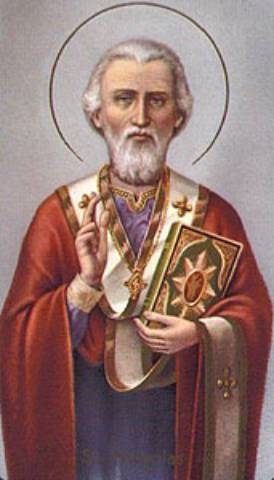

St. Nicholas – Patron Saint
Part 4
The sixth group consists of those on both sides of
the law.
Lawgivers and judges themselves invoked Nicholas as
their patron Saint. For instance, in 1341, Parisian lawyers grouped themselves
together under the double patronage of St. Nicholas and St. Catherine. These
were later joined by the various recorders, clerks, petitioners, and members of
the court. They celebrated both feasts – December 6th and May 9th;
their altar stood in the great hall of the Palais de Justice.
Then too there was the “brotherhood of the King’s
notaries” in the Grand Chatelet, in the parish of St.-Germain-l’Auxerrois, and
that of the “attorneys in the court of accounts.” All whose professions
directly or indirectly concerned the law, in fact, took as their model a man
who set the innocent free, and threatened thieves and liars with the vengeance
of God.
There was a very interesting guild in Guerande,
which comprised the bishops and dignitaries of the area, the workers in the
salt marshes, the wardens of the prison, the butchers and the town bard! Its
constitution demanded that on the feast of St. Nicholas on May 9th,
all its members must “ride out on horseback once a year after Mass on this
morning of the said feast, outside the town, in as seemly a manner as they
could, and return to the town with branches of leaves and flowers and recount
stories of the past before going to dine.” At Amiens, an association of
pilgrims held a special ceremony in which anyone returning from Bari would be
solemnly conducted to the church by all those who had made the journey earlier.
They were to place a gold crown on his head which he must wear for a year as “king
of the brotherhood.” At Valenciennes the fraternity of St. Nicholas crafted a
silver statue which contained some of the “manna” from the tomb. They proudly
carried it whenever there was a procession.
Wherever the devotion was widespread – in the
Netherlands, in Germany, on the banks of the Vistula, in Riga – we find similar
customs.
Nicholas also became the patron Saint of prisoners and captives. The deliverance of the three imperial officers naturally caused St. Nicholas to be invoked by them and on their behalf, and many miracles of his intervention are recorded throughout the Middle Ages.
In later centuries, several other legends developed
on the same theme, suited to the new historical circumstances – miraculous
rescues, through Nicholas, from the hands of the Saracens, Turks, etc. In the
Byzantine Empire, which until its fall was the bulwark of Christianity against
the heathens pressing in from all sides, the imprisonment theme remained alive
through the centuries. A heavenly protector of prisoners was an enduring need,
and so it is understandable that this patronage remained viable.
Nicholas is also known as the friend and protector
of all those in trouble. On several occasions Nicholas jeopardized his own life
by befriending people who had been wrongly accused, and there are folks who say
it is well to remember him if one is under false condemnation (or has unjustly
lost a lawsuit), for they feel that he surely remembers in Heaven those whose
troubles touched his heart when he was on Earth.
In the ninth century, the faithful (among them
Methodius and Joseph the Hymnographer) were in danger of being imprisoned and
killed by the iconoclast emperor because they venerated images; they needed
powerful intercessors, and who more natural for them to pray to than the one
who had intervened to save the innocent from these very fates?
When the dispute was finally settled, the emperor,
Basil the Macedonian, displayed his power by having a church built in his
capital which the patriarch Photius consecrated on May 1, 881. It was dedicated
to the Redeemer, to the Mother of God, the Archangel Michael, the prophet Elias
and St. Nicholas, and each of the four Saints occupied a semicircular niche
around a central figure of Christ.
On the other hand, thieves and poachers supposedly
considered him their patron too – apparently in the interest of anticipated
possessions.
The ingenuous Middle Ages made him both the
protector of property and the patron of burglars!
His name is also associated with thieves. It refers
to the thieves who had stolen goods left under the guardianship of St. Nicholas’
image, and who were compelled by the Saint to restore the goods. The association
became well established and robbers and thieves were called St. Nicholas’
clerks.
Induced some thieves to return their plunder. This explains his protection against theft and robbery, and his patronage of them - he’s not helping them steal, but to repent and change. In the past, thieves have been known as “Saint Nicholas’ clerks” or “Knights of Saint Nicholas”.
But he was patron of so many things! Of prisoners
and those awaiting execution, naturally, because of the tale of the three
officers, and by extension, of the various thieves and brigands whom
Shakespeare calls, in Henry IV (Part 1),
St. Nicholas’ clerks.
Thought to Ponder:
Thought to Discuss around the Dinner Table:
St. Nicholas – Patron Saint
Part 4
